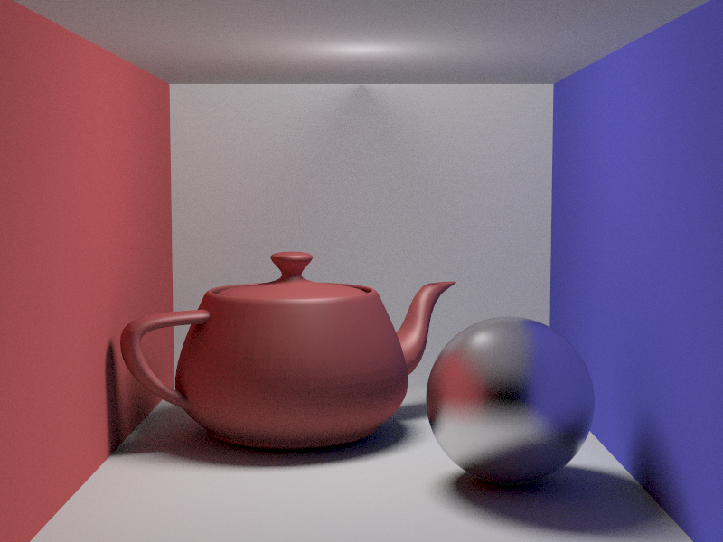
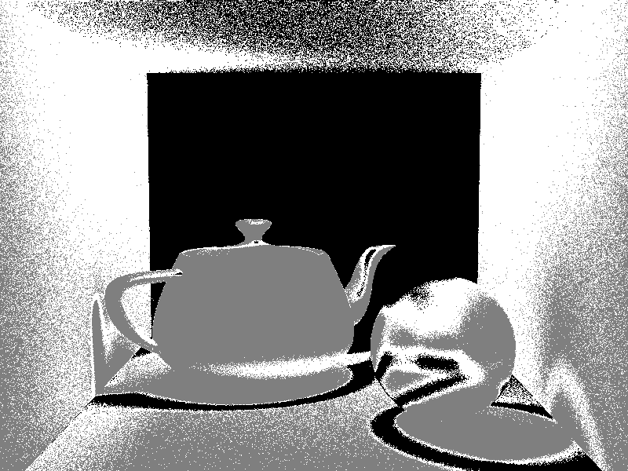
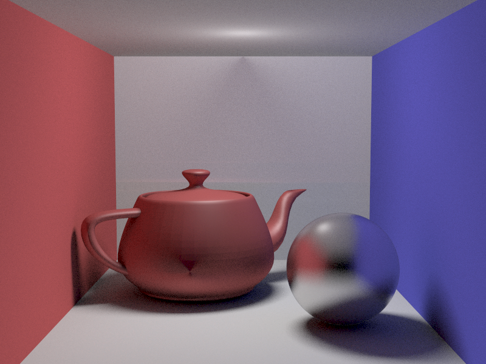

CS6620 - Ray Tracing for Graphics
Project 12 - Path Tracing.
Results
Rendered in 2:33:13 with eight threads, four bounces, and 64, 128, or 256 samples.


Machine Specs
Running Windows 10 on a Bootcamped MacBook Pro
| Processor |
Intel Core i7 2.50 GHz |
| RAM |
16GB 1600 MHz DDR3 |
| Graphics Card |
Intel Iris Pro 1536 MB |
Project Stumbling Blocks
When finding the orthogonal directions for hemisphere sampling, I was using the y direction directly, instead of
finding the cross product of the y direction and the normal.
